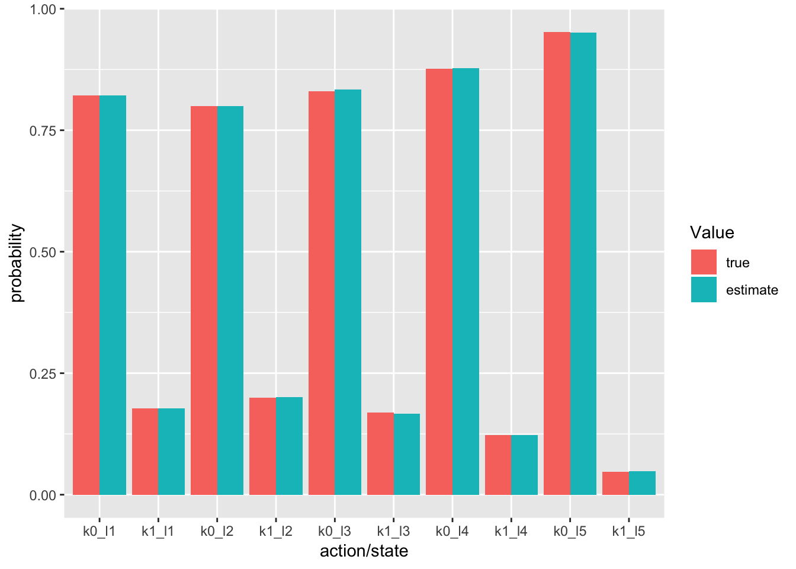
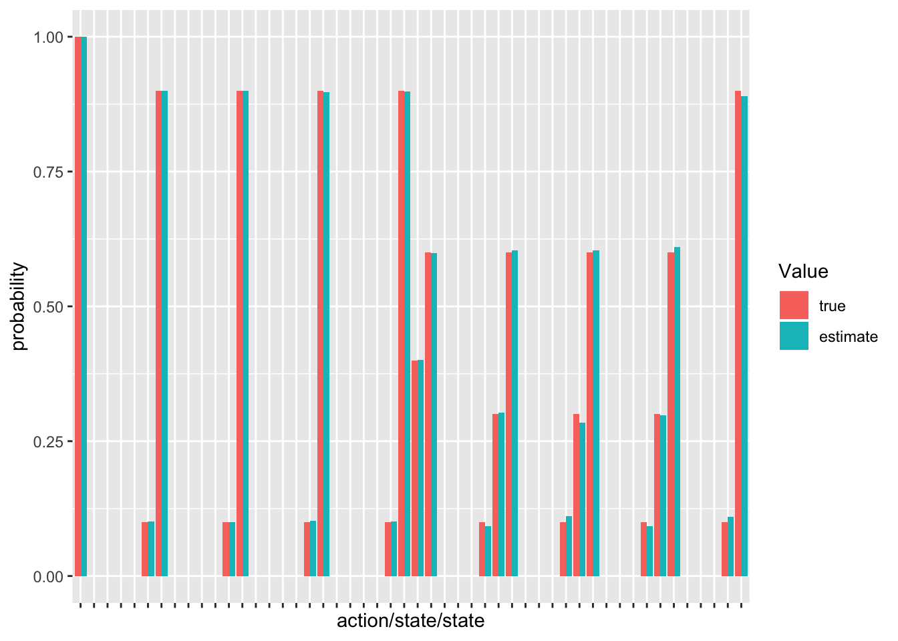
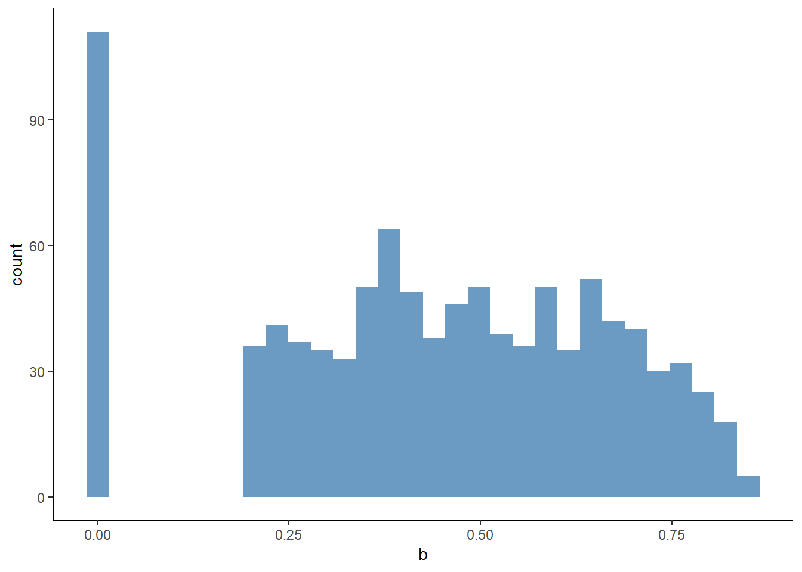
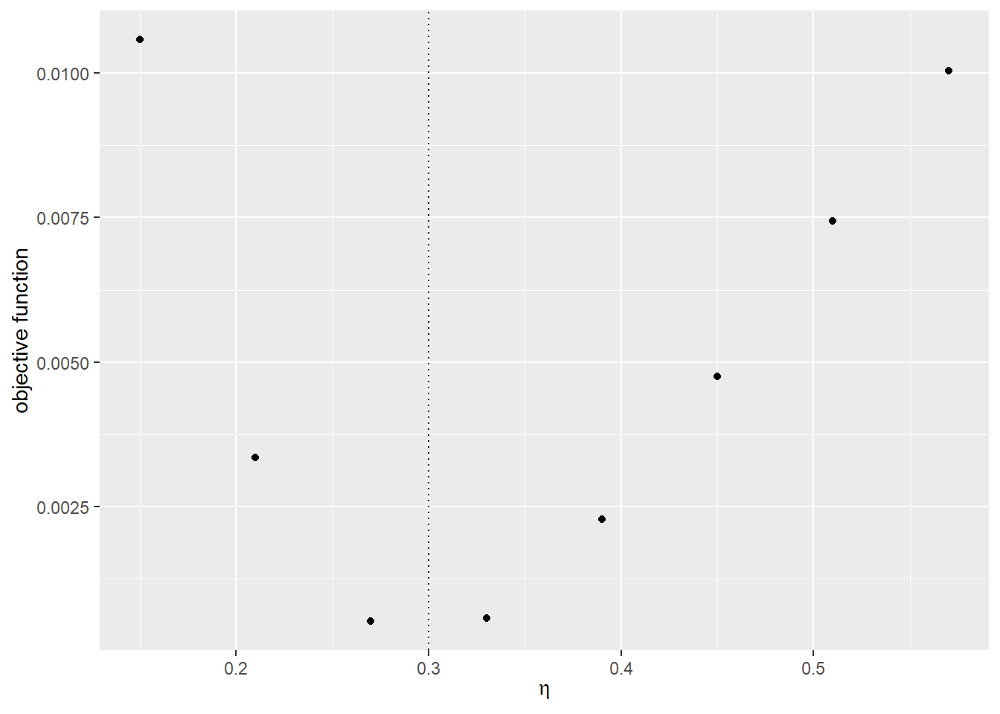

Chapter 18 Assignment 8: Dynamic Game
18.1 Simulate data
Suppose that there are \(m = 1, \cdots, M\) markets and in each market there are \(i = 1, \cdots, N\) firms and each firm makes decisions for \(t = 1, \cdots, \infty\). In the following, I suppress the index of market, \(m\). We solve the model under the infinite-horizon assumption, but generate data only for \(t = 1, \cdots, T\). There are \(L = 3\) states \(\{1, 2, 3\}\) for each firm. Each firm can choose \(K + 1 = 2\) actions \(\{0, 1\}\). Thus, \(m_a := (K + 1)^N\) and \(m_s := L^N\). Let \(a_i\) and \(s_i\) be firm \(i\)’s action and state, and \(a\) and \(s\) are vectors of individual actions and states.
The mean period payoff to firm \(i\) is: \[ \pi_i(a, s) := \tilde{\pi}(a_i, s_i, \overline{s}_{-i}) := \alpha \ln s_i - \eta \ln s_i \sum_{j \neq i} \ln s_j - \beta a_i, \] where \(\alpha, \beta, \eta> 0\), and \(\alpha > \eta\). The term \(\eta\) means that the returns to investment decreases as rival’s average state profile improves. The period payoff is: \[ \tilde{\pi}(a_i, s_i, \overline{s}_{-i})+ \epsilon_i(a_i), \] and \(\epsilon_i(a_i)\) is an i.i.d. type-I extreme random variable that is independent of all the other variables.
At the beginning of each period, state \(s\) is realized and publicly observed. Then, choice-specific shocks \(\epsilon_i(a_i), a_i = 0, 1\) are realized and privately observed by firm \(i = 1, \cdots, N\). Then each firm simultaneously chooses her action. Then, the game moves to next period.
State transition is independent across firms conditional on individual state and action.
Suppose that \(s_i > 1\) and \(s_i < L\). If \(a_i = 0\), the state stays at the same state with probability \(1 - \kappa\) and moves down by 1 with probability \(\kappa\). If \(a = 1\), the state moves up by 1 with probability \(\gamma\), moves down by 1 with probability \(\kappa\), and stays at the same with probability \(1 - \kappa - \gamma\).
Suppose that \(s_i = 1\). If \(a_i = 0\), the state stays at the same state with probability 1. If \(a_i = 1\), the state moves up by 1 with probability \(\gamma\) and stays at the same with probability \(1 - \gamma\).
Suppose that \(s_i = L\). If \(a_i = 0\), the state stays at the same state with probability \(1 - \kappa\) and moves down by 1 with probability \(\kappa\). If \(a = 1\), the state moves down by 1 with probability \(\kappa\), and stays at the same with probability \(1 - \kappa\).
The mean period profit is summarized in \(\Pi\) as:
\[ \Pi := \begin{pmatrix} \pi(1, 1)\\ \vdots\\ \pi(m_a, 1)\\ \vdots \\ \pi(1, m_s)\\ \vdots\\ \pi(m_a, m_s)\\ \end{pmatrix} \]
The transition law is summarized in \(G\) as:
\[ g(a, s, s') := \mathbb{P}\{s_{t + 1} = s'|s_t = s, a_t = a\}, \]
\[ G := \begin{pmatrix} g(1, 1, 1) & \cdots & g(1, 1, m_s)\\ \vdots & & \vdots \\ g(m_a, 1, 1) & \cdots & g(m_a, 1, m_s)\\ & \vdots & \\ g(1, m_s, 1) & \cdots & g(1, m_s, m_s)\\ \vdots & & \vdots \\ g(m_a, m_s, 1) & \cdots & g(m_a, m_s, m_s)\\ \end{pmatrix}. \] The discount factor is denoted by \(\delta\). We simulate data for \(M\) markets with \(N\) firms for \(T\) periods.
- Set constants and parameters as follows:
# set seed
set.seed(1)
# set constants
L <- 5
K <- 1
T <- 100
N <- 3
M <- 1000
lambda <- 1e-10
# set parameters
alpha <- 1
eta <- 0.3
beta <- 2
kappa <- 0.1
gamma <- 0.6
delta <- 0.95- Write a function
compute_action_state_space(K, L, N)that returns a data frame for action and state space. Returned objects are list of data frameAandS. InA, columnkis the index of an action profile,iis the index of a firm, andais the action of the firm. InS, columnlis the index of an state profile,iis the index of a firm, andsis the state of the firm.
output <- compute_action_state_space(L, K, N)
A <- output$A
head(A)## # A tibble: 6 x 3
## k i a
## <int> <int> <int>
## 1 1 1 0
## 2 1 2 0
## 3 1 3 0
## 4 2 1 1
## 5 2 2 0
## 6 2 3 0tail(A)## # A tibble: 6 x 3
## k i a
## <int> <int> <int>
## 1 7 1 0
## 2 7 2 1
## 3 7 3 1
## 4 8 1 1
## 5 8 2 1
## 6 8 3 1S <- output$S
head(S)## # A tibble: 6 x 3
## l i s
## <int> <int> <int>
## 1 1 1 1
## 2 1 2 1
## 3 1 3 1
## 4 2 1 2
## 5 2 2 1
## 6 2 3 1tail(S)## # A tibble: 6 x 3
## l i s
## <int> <int> <int>
## 1 124 1 4
## 2 124 2 5
## 3 124 3 5
## 4 125 1 5
## 5 125 2 5
## 6 125 3 5# dimension
m_a <- max(A$k); m_a## [1] 8m_s <- max(S$l); m_s## [1] 125- Write function
compute_PI_game(alpha, beta, eta, L, K, N)that returns a list of \(\Pi_i\).
PI <- compute_PI_game(alpha, beta, eta, A, S)
head(PI[[N]])## [,1]
## [1,] 0
## [2,] 0
## [3,] 0
## [4,] 0
## [5,] -2
## [6,] -2dim(PI[[N]])[1] == m_s * m_a## [1] TRUE- Write function
compute_G_game(g, A, S)that converts an individual transition probability matrix into a joint transition probability matrix \(G\).
G_marginal <- compute_G(kappa, gamma, L, K)
G <- compute_G_game(G_marginal, A, S)
head(G)## 1 2 3 4 5 6 7 8 9 10 11 12 13 14 15 16 17 18 19 20 21 22 23 24 25 26 27
## [1,] 1.00 0.00 0 0 0 0.00 0.00 0 0 0 0 0 0 0 0 0 0 0 0 0 0 0 0 0 0 0.00 0.00
## [2,] 0.40 0.60 0 0 0 0.00 0.00 0 0 0 0 0 0 0 0 0 0 0 0 0 0 0 0 0 0 0.00 0.00
## [3,] 0.40 0.00 0 0 0 0.60 0.00 0 0 0 0 0 0 0 0 0 0 0 0 0 0 0 0 0 0 0.00 0.00
## [4,] 0.16 0.24 0 0 0 0.24 0.36 0 0 0 0 0 0 0 0 0 0 0 0 0 0 0 0 0 0 0.00 0.00
## [5,] 0.40 0.00 0 0 0 0.00 0.00 0 0 0 0 0 0 0 0 0 0 0 0 0 0 0 0 0 0 0.60 0.00
## [6,] 0.16 0.24 0 0 0 0.00 0.00 0 0 0 0 0 0 0 0 0 0 0 0 0 0 0 0 0 0 0.24 0.36
## 28 29 30 31 32 33 34 35 36 37 38 39 40 41 42 43 44 45 46 47 48 49 50 51 52 53 54 55 56
## [1,] 0 0 0 0 0 0 0 0 0 0 0 0 0 0 0 0 0 0 0 0 0 0 0 0 0 0 0 0 0
## [2,] 0 0 0 0 0 0 0 0 0 0 0 0 0 0 0 0 0 0 0 0 0 0 0 0 0 0 0 0 0
## [3,] 0 0 0 0 0 0 0 0 0 0 0 0 0 0 0 0 0 0 0 0 0 0 0 0 0 0 0 0 0
## [4,] 0 0 0 0 0 0 0 0 0 0 0 0 0 0 0 0 0 0 0 0 0 0 0 0 0 0 0 0 0
## [5,] 0 0 0 0 0 0 0 0 0 0 0 0 0 0 0 0 0 0 0 0 0 0 0 0 0 0 0 0 0
## [6,] 0 0 0 0 0 0 0 0 0 0 0 0 0 0 0 0 0 0 0 0 0 0 0 0 0 0 0 0 0
## 57 58 59 60 61 62 63 64 65 66 67 68 69 70 71 72 73 74 75 76 77 78 79 80 81 82 83 84 85
## [1,] 0 0 0 0 0 0 0 0 0 0 0 0 0 0 0 0 0 0 0 0 0 0 0 0 0 0 0 0 0
## [2,] 0 0 0 0 0 0 0 0 0 0 0 0 0 0 0 0 0 0 0 0 0 0 0 0 0 0 0 0 0
## [3,] 0 0 0 0 0 0 0 0 0 0 0 0 0 0 0 0 0 0 0 0 0 0 0 0 0 0 0 0 0
## [4,] 0 0 0 0 0 0 0 0 0 0 0 0 0 0 0 0 0 0 0 0 0 0 0 0 0 0 0 0 0
## [5,] 0 0 0 0 0 0 0 0 0 0 0 0 0 0 0 0 0 0 0 0 0 0 0 0 0 0 0 0 0
## [6,] 0 0 0 0 0 0 0 0 0 0 0 0 0 0 0 0 0 0 0 0 0 0 0 0 0 0 0 0 0
## 86 87 88 89 90 91 92 93 94 95 96 97 98 99 100 101 102 103 104 105 106 107 108 109 110
## [1,] 0 0 0 0 0 0 0 0 0 0 0 0 0 0 0 0 0 0 0 0 0 0 0 0 0
## [2,] 0 0 0 0 0 0 0 0 0 0 0 0 0 0 0 0 0 0 0 0 0 0 0 0 0
## [3,] 0 0 0 0 0 0 0 0 0 0 0 0 0 0 0 0 0 0 0 0 0 0 0 0 0
## [4,] 0 0 0 0 0 0 0 0 0 0 0 0 0 0 0 0 0 0 0 0 0 0 0 0 0
## [5,] 0 0 0 0 0 0 0 0 0 0 0 0 0 0 0 0 0 0 0 0 0 0 0 0 0
## [6,] 0 0 0 0 0 0 0 0 0 0 0 0 0 0 0 0 0 0 0 0 0 0 0 0 0
## 111 112 113 114 115 116 117 118 119 120 121 122 123 124 125
## [1,] 0 0 0 0 0 0 0 0 0 0 0 0 0 0 0
## [2,] 0 0 0 0 0 0 0 0 0 0 0 0 0 0 0
## [3,] 0 0 0 0 0 0 0 0 0 0 0 0 0 0 0
## [4,] 0 0 0 0 0 0 0 0 0 0 0 0 0 0 0
## [5,] 0 0 0 0 0 0 0 0 0 0 0 0 0 0 0
## [6,] 0 0 0 0 0 0 0 0 0 0 0 0 0 0 0dim(G)[1] == m_s * m_a## [1] TRUEdim(G)[2] == m_s## [1] TRUEThe ex-ante-value function for a firm is written as a function of a conditional choice probability as follows: \[ \varphi_i^{(\theta_1, \theta_2)}(p) := [I - \delta \Sigma(p) G]^{-1}[\Sigma(p)\Pi_i + D_i(p)], \] where \(\theta_1 = (\alpha, \beta, \eta)\) and \(\theta_2 = (\kappa, \gamma)\), \(p_i(a_i|s)\) is the probability that firm \(i\) choose action \(a_i\) when the state profile is \(s\), and: \[ p(a|s) = \prod_{i = 1}^N p_i(a_i|s), \]
\[ p(s) = \begin{pmatrix} p(1|s) \\ \vdots \\ p(m_a|s) \end{pmatrix}, \]
\[ p = \begin{pmatrix} p(1)\\ \vdots\\ p(m_s) \end{pmatrix}, \]
\[ \Sigma(p) = \begin{pmatrix} p(1)' & & \\ & \ddots & \\ & & p(L)' \end{pmatrix} \]
and:
\[ D_i(p) = \begin{pmatrix} \sum_{k = 0}^K \mathbb{E}\{\epsilon_i^k|a_i = k, 1\}p_i(a_i = k|1)\\ \vdots\\ \sum_{k = 0}^K \mathbb{E}\{\epsilon_i^k|a_i = k, m_s\}p_i(a_i = k|m_s) \end{pmatrix}. \]
- Write a function
initialize_p_marginal(A, S)that defines an initial marginal condition choice probability. In the outputp_marginal,pis the probability for firmito take actionaconditional on the state profile beingl. Next, write a functioncompute_p_joint(p_marginal, A, S)that computes a corresponding joint conditional choice probability from a marginal conditional choice probability. In the outputp_joint,pis the joint probability that firms take action profilekcondition on the state profile beingl. Finally, write a functioncompute_p_marginal(p_joint, A, S)that compute a corresponding marginal conditional choice probability from a joint conditional choice probability.
# define a conditional choice probability for each firm
p_marginal <- initialize_p_marginal(A, S)
p_marginal## # A tibble: 750 x 4
## i l a p
## <int> <int> <int> <dbl>
## 1 1 1 0 0.5
## 2 1 1 1 0.5
## 3 1 2 0 0.5
## 4 1 2 1 0.5
## 5 1 3 0 0.5
## 6 1 3 1 0.5
## 7 1 4 0 0.5
## 8 1 4 1 0.5
## 9 1 5 0 0.5
## 10 1 5 1 0.5
## # ... with 740 more rowsdim(p_marginal)[1] == N * m_s * (K + 1)## [1] TRUE# compute joint conitional choice probability from marginal probability
p_joint <- compute_p_joint(p_marginal, A, S)
p_joint## # A tibble: 1,000 x 3
## l k p
## <int> <int> <dbl>
## 1 1 1 0.125
## 2 1 2 0.125
## 3 1 3 0.125
## 4 1 4 0.125
## 5 1 5 0.125
## 6 1 6 0.125
## 7 1 7 0.125
## 8 1 8 0.125
## 9 2 1 0.125
## 10 2 2 0.125
## # ... with 990 more rowsdim(p_joint)[1] == m_s * m_a## [1] TRUE# compute marginal conditional chocie probability from joint probability
p_marginal_2 <- compute_p_marginal(p_joint, A, S)
max(abs(p_marginal - p_marginal_2))## [1] 0- Write a function
compute_Sigma(p_marginal, A, S)that computes \(\Sigma(p)\) given a joint conditional choice probability. Then, write a functioncompute_D(p_marginal)that returns a list of \(D_i(p)\).
# compute Sigma for ex-ante value function calculation
Sigma <- compute_Sigma(p_marginal, A, S)
head(Sigma)## 6 x 1000 sparse Matrix of class "dgCMatrix"
##
## [1,] 0.125 0.125 0.125 0.125 0.125 0.125 0.125 0.125 . . . . . .
## [2,] . . . . . . . . 0.125 0.125 0.125 0.125 0.125 0.125
## [3,] . . . . . . . . . . . . . .
## [4,] . . . . . . . . . . . . . .
## [5,] . . . . . . . . . . . . . .
## [6,] . . . . . . . . . . . . . .
##
## [1,] . . . . . . . . . . . . . .
## [2,] 0.125 0.125 . . . . . . . . . . . .
## [3,] . . 0.125 0.125 0.125 0.125 0.125 0.125 0.125 0.125 . . . .
## [4,] . . . . . . . . . . 0.125 0.125 0.125 0.125
## [5,] . . . . . . . . . . . . . .
## [6,] . . . . . . . . . . . . . .
##
## [1,] . . . . . . . . . . . . . ......
## [2,] . . . . . . . . . . . . . ......
## [3,] . . . . . . . . . . . . . ......
## [4,] 0.125 0.125 0.125 0.125 . . . . . . . . . ......
## [5,] . . . . 0.125 0.125 0.125 0.125 0.125 0.125 0.125 0.125 . ......
## [6,] . . . . . . . . . . . . 0.125 ......
##
## .....suppressing 959 columns in show(); maybe adjust 'options(max.print= *, width = *)'
## ..............................dim(Sigma)[1] == m_s## [1] TRUEdim(Sigma)[2] == m_s * m_a## [1] TRUE# compute D for ex-ante value function calculation
D <- compute_D(p_marginal)
head(D[[N]])## [,1]
## [1,] 1.270363
## [2,] 1.270363
## [3,] 1.270363
## [4,] 1.270363
## [5,] 1.270363
## [6,] 1.270363dim(D[[N]])[1] == m_s## [1] TRUE- Write a function
compute_exante_value_game(p_marginal, A, S, PI, G, delta)that returns a list of matrices whose \(i\)-th element represents the ex-ante value function given a conditional choice probability for firm \(i\).
# compute ex-ante value funciton for each firm
V <- compute_exante_value_game(p_marginal, A, S, PI, G, delta)
head(V[[N]])## 6 x 1 Matrix of class "dgeMatrix"
## [,1]
## l1 10.786330
## l2 10.175982
## l3 9.606812
## l4 9.255459
## l5 9.115332
## l6 10.175982dim(V[[N]])[1] == m_s## [1] TRUEThe optimal conditional choice probability is written as a function of an ex-ante value function and a conditional choice probability of others as follows: \[ \Lambda_i^{(\theta_1, \theta_2)}(V_i, p_{-i})(a_i, s) := \frac{\exp\{\sum_{a_{-i}}p_{-i}(a_{-i}|s)[\pi_i(a_i, a_{-i}, s) + \delta \sum_{s'}V_i(s')g(a_i, a_{-i}, s, s')]\}}{\sum_{a_i'}\exp\{\sum_{a_{-i}}p_{-i}(a_{-i}|s)[\pi_i(a_i', a_{-i}, s) + \delta \sum_{s'}V_i(s')g(a_i', a_{-i}, s, s')]\}}, \] where \(V\) is an ex-ante value function.
- Write a function
compute_profile_value_game(V, PI, G, delta, S, A)that returns a data frame that contains information on value function at a state and action profile for each firm. In the outputvalue,iis the index of a firm,lis the index of a state profile,kis the index of an action profile, andvalueis the value for the firm at the state and action profile.
# compute state-action-profile value function
value <- compute_profile_value_game(V, PI, G, delta, S, A)
value## # A tibble: 3,000 x 4
## i l k value
## <int> <int> <int> <dbl>
## 1 1 1 1 10.2
## 2 1 1 2 9.63
## 3 1 1 3 9.90
## 4 1 1 4 9.13
## 5 1 1 5 9.90
## 6 1 1 6 9.13
## 7 1 1 7 9.55
## 8 1 1 8 8.64
## 9 1 2 1 13.0
## 10 1 2 2 12.1
## # ... with 2,990 more rowsdim(value)[1] == N * m_s * m_a## [1] TRUE- Write a function
compute_choice_value_game(p_marginal, V, PI, G, delta, A, S)that computes a data frame that contains information on a choice-specific value function given an ex-ante value function and a conditional choice probability of others.
# compute choice-specific value function
value <- compute_choice_value_game(p_marginal, V, PI, G, delta, A, S)
value## # A tibble: 750 x 4
## i l a value
## <int> <int> <int> <dbl>
## 1 1 1 0 9.90
## 2 1 1 1 9.13
## 3 1 2 0 12.4
## 4 1 2 1 11.4
## 5 1 3 0 14.5
## 6 1 3 1 13.2
## 7 1 4 0 16.0
## 8 1 4 1 14.3
## 9 1 5 0 16.8
## 10 1 5 1 14.8
## # ... with 740 more rows- Write a function
compute_ccp_game(p_marginal, V, PI, G, delta, A, S)that computes a data frame that contains information on a conditional choice probability given an ex-ante value function and a conditional choice probability of others.
# compute conditional choice probability
p_marginal <- compute_ccp_game(p_marginal, V, PI, G, delta, A, S)
p_marginal## # A tibble: 750 x 4
## i l a p
## <int> <int> <int> <dbl>
## 1 1 1 0 0.683
## 2 1 1 1 0.317
## 3 1 2 0 0.734
## 4 1 2 1 0.266
## 5 1 3 0 0.794
## 6 1 3 1 0.206
## 7 1 4 0 0.840
## 8 1 4 1 0.160
## 9 1 5 0 0.881
## 10 1 5 1 0.119
## # ... with 740 more rows- Write a function
solve_dynamic_game(PI, G, L, K, delta, lambda, A, S)that find the equilibrium conditional choice probability and ex-ante value function by iterating the update of an ex-ante value function and a best-response conditional choice probability. The iteration should stop when \(\max_s|V^{(r + 1)}(s) - V^{(r)}(s)| < \lambda\) with \(\lambda = 10^{-10}\). There is no theoretical guarantee for the convergence.
# solve the dynamic game model
output <-
solve_dynamic_game(PI, G, L, K, delta, lambda, A, S)
save(output, file = "data/A8_equilibrium.RData")load(file = "data/A8_equilibrium.RData")
p_marginal <- output$p_marginal; head(p_marginal)## # A tibble: 6 x 4
## i l a p
## <int> <int> <int> <dbl>
## 1 1 1 0 0.650
## 2 1 1 1 0.350
## 3 1 2 0 0.712
## 4 1 2 1 0.288
## 5 1 3 0 0.785
## 6 1 3 1 0.215V <- output$V[[N]]; head(V)## 6 x 1 Matrix of class "dgeMatrix"
## [,1]
## l1 13.25670
## l2 12.39394
## l3 11.47346
## l4 10.82808
## l5 10.53018
## l6 12.39394# compute joint conitional choice probability
p_joint <- compute_p_joint(p_marginal, A, S); head(p_joint)## # A tibble: 6 x 3
## l k p
## <int> <int> <dbl>
## 1 1 1 0.275
## 2 1 2 0.148
## 3 1 3 0.148
## 4 1 4 0.0795
## 5 1 5 0.148
## 6 1 6 0.0795- Write a function
simulate_dynamic_game(p_joint, l, G, N, T, S, A, seed)that simulate the data for a market starting from an initial state for \(T\) periods. The function should accept a value of seed and set the seed at the beginning of the procedure inside the function, because the process is stochastic.
# simulate a dynamic game
# set initial state profile
l <- 1
# draw simulation for a firm
seed <- 1
df <- simulate_dynamic_game(p_joint, l, G, N, T, S, A, seed)
df## # A tibble: 300 x 6
## t i l k s a
## <int> <int> <dbl> <dbl> <int> <int>
## 1 1 1 1 1 1 0
## 2 1 2 1 1 1 0
## 3 1 3 1 1 1 0
## 4 2 1 1 5 1 0
## 5 2 2 1 5 1 0
## 6 2 3 1 5 1 1
## 7 3 1 26 6 1 1
## 8 3 2 26 6 1 0
## 9 3 3 26 6 2 1
## 10 4 1 26 5 1 0
## # ... with 290 more rows- Write a function
simulate_dynamic_decision_across_firms(p_joint, l, G, N, T, M, S, A, seed)that returns simulation data for \(N\) firm. For firm \(i\), set the seed at \(i\)
# simulate data across markets
df <- simulate_dynamic_decision_across_markets(p_joint, l, G, N, T, M, S, A)
save(df, file = "data/A8_df.RData")load(file = "data/A8_df.RData")
df## # A tibble: 300,000 x 7
## m t i l k s a
## <int> <int> <int> <dbl> <dbl> <int> <int>
## 1 1 1 1 1 1 1 0
## 2 1 1 2 1 1 1 0
## 3 1 1 3 1 1 1 0
## 4 1 2 1 1 5 1 0
## 5 1 2 2 1 5 1 0
## 6 1 2 3 1 5 1 1
## 7 1 3 1 26 6 1 1
## 8 1 3 2 26 6 1 0
## 9 1 3 3 26 6 2 1
## 10 1 4 1 26 5 1 0
## # ... with 299,990 more rowssummary(df)## m t i l k
## Min. : 1.0 Min. : 1.00 Min. :1 Min. : 1.00 Min. :1.000
## 1st Qu.: 250.8 1st Qu.: 25.75 1st Qu.:1 1st Qu.: 28.00 1st Qu.:1.000
## Median : 500.5 Median : 50.50 Median :2 Median : 53.00 Median :1.000
## Mean : 500.5 Mean : 50.50 Mean :2 Mean : 55.08 Mean :2.244
## 3rd Qu.: 750.2 3rd Qu.: 75.25 3rd Qu.:3 3rd Qu.: 83.00 3rd Qu.:3.000
## Max. :1000.0 Max. :100.00 Max. :3 Max. :125.00 Max. :8.000
## s a
## Min. :1.000 Min. :0.0000
## 1st Qu.:2.000 1st Qu.:0.0000
## Median :3.000 Median :0.0000
## Mean :2.753 Mean :0.1776
## 3rd Qu.:4.000 3rd Qu.:0.0000
## Max. :5.000 Max. :1.0000- Write a function
estimate_ccp_marginal_game(df)that returns a non-parametric estimate of the marginal conditional choice probability for each firm in the data. Compare the estimated conditional choice probability and the true conditional choice probability by a bar plot.
# non-parametrically estimate the conditional choice probability
p_marginal_est <- estimate_ccp_marginal_game(df)
check_ccp <- p_marginal_est %>%
dplyr::rename(estimate = p) %>%
dplyr::left_join(p_marginal, by = c("i", "l", "a")) %>%
dplyr::rename(true = p) %>%
dplyr::filter(a == 1)
ggplot(data = check_ccp, aes(x = true, y = estimate)) +
geom_point() +
labs(fill = "Value") + xlab("true") + ylab("estimate")
- Write a function
estimate_G_marginal(df)that returns a non-parametric estimate of the marginal transition probability matrix. Compare the estimated transition matrix and the true transition matrix by a bar plot.
# non-parametrically estimate individual transition probability
G_marginal_est <- estimate_G_marginal(df)
check_G <- data.frame(type = "true", reshape2::melt(G_marginal))
check_G_est <- data.frame(type = "estimate", reshape2::melt(G_marginal_est))
check_G <- rbind(check_G, check_G_est)
check_G$variable = paste(check_G$Var1, check_G$Var2, sep = "_")
ggplot(data = check_G, aes(x = variable, y = value,
fill = type)) +
geom_bar(stat = "identity", position = "dodge") +
labs(fill = "Value") + xlab("action/state/state") + ylab("probability") +
theme(axis.text.x = element_blank())
18.2 Estimate parameters
- Vectorize the parameters as follows:
theta_1 <- c(alpha, beta, eta)
theta_2 <- c(kappa, gamma)
theta <- c(theta_1, theta_2)We estimate the parameters by a CCP approach.
- Write a function
estimate_theta_2_game(df)that returns the estimates of \(\kappa\) and \(\gamma\) directly from data by counting relevant events.
# estimate theta_2
theta_2_est <- estimate_theta_2_game(df); theta_2_est## [1] 0.09995377 0.60136442The objective function of the minimum distance estimator based on the conditional choice probability approach is: \[ \frac{1}{N K m_s} \sum_{i = 1}^N \sum_{l = 1}^{m_s} \sum_{k = 1}^{K}\{\hat{p}_i(a_k|s_l) - p_i^{(\theta_1, \theta_2)}(a_k|s_l)\}^2, \] where \(\hat{p}_i\) is the non-parametric estimate of the marginal conditional choice probability and \(p_i^{(\theta_1, \theta_2)}\) is the marginal conditional choice probability under parameters \(\theta_1\) and \(\theta_2\) given \(\hat{p}_i\). \(a_k\) is \(k\)-th action for a firm and \(s_l\) is \(l\)-th state profile.
- Write a function
compute_CCP_objective_game(theta_1, theta_2, p_est, L, K, delta)that returns the objective function of the above minimum distance estimator given a non-parametric estimate of the conditional choice probability and \(\theta_1\) and \(\theta_2\).
# compute the objective function of the minimum distance estimator based on the CCP approach
objective <- compute_CCP_objective_game(theta_1, theta_2, p_marginal_est, A, S, delta, lambda)
save(objective, file = "data/A8_objective.RData")load(file = "data/A8_objective.RData")
objective## [1] 0.0002737567- Check the value of the objective function around the true parameter.
# label
label <- c("\\alpha", "\\beta", "\\eta")
label <- paste("$", label, "$", sep = "")
# compute the graph
graph <- foreach (i = 1:length(theta_1)) %do% {
theta_i <- theta_1[i]
theta_i_list <- theta_i * seq(0.5, 2, by = 0.2)
objective_i <-
foreach (j = 1:length(theta_i_list),
.combine = "rbind") %dopar% {
theta_ij <- theta_i_list[j]
theta_j <- theta_1
theta_j[i] <- theta_ij
objective_ij <-
compute_CCP_objective_game(theta_j, theta_2, p_marginal_est, A, S, delta, lambda)
return(objective_ij)
}
df_graph <- data.frame(x = theta_i_list, y = objective_i)
g <- ggplot(data = df_graph, aes(x = x, y = y)) +
geom_point() +
geom_vline(xintercept = theta_i, linetype = "dotted") +
ylab("objective function") + xlab(TeX(label[i]))
return(g)
}
save(graph, file = "data/A8_CCP_graph.RData")load(file = "data/A8_CCP_graph.RData")
graph## [[1]]
##
## [[2]]
##
## [[3]]
- Estimate the parameters by minimizing the objective function. To keep the model to be well-defined, impose an ad hoc lower and upper bounds such that \(\alpha \in [0, 1], \beta \in [0, 5], \delta \in [0, 1]\).
lower <- rep(0, length(theta_1))
upper <- c(1, 5, 0.3)
CCP_result <-
optim(par = theta_1,
fn = compute_CCP_objective_game,
method = "L-BFGS-B",
lower = lower,
upper = upper,
theta_2 = theta_2_est,
p_marginal_est = p_marginal_est,
A = A,
S = S,
delta = delta,
lambda = lambda)
save(CCP_result, file = "data/A8_CCP_result.RData")load(file = "data/A8_CCP_result.RData")
CCP_result## $par
## [1] 1.000000 2.011446 0.294446
##
## $value
## [1] 0.0002702126
##
## $counts
## function gradient
## 12 12
##
## $convergence
## [1] 0
##
## $message
## [1] "CONVERGENCE: REL_REDUCTION_OF_F <= FACTR*EPSMCH"compare <-
data.frame(
true = theta_1,
estimate = CCP_result$par
); compare## true estimate
## 1 1.0 1.000000
## 2 2.0 2.011446
## 3 0.3 0.294446